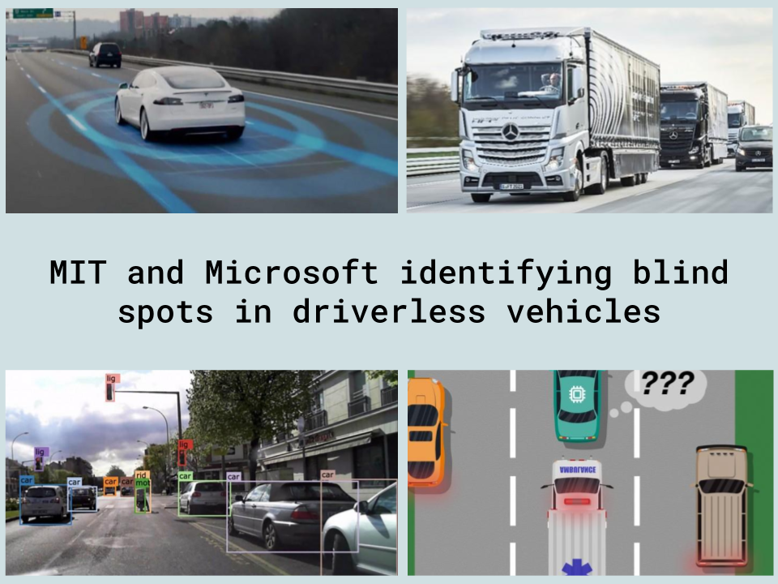

"Mission for Sports Scholarships" - MIT Scratch Story
Description of story and purpose:
The purpose of the story is to choose your outcomes but make the right choice to get the sports scholorship.
Description of development and skills learned:
I learned that if you use the if-else statement wrong, that the program doesn't always work correctly.
"Canvas Creator" - MIT App Inventor
Description of the app and purpose:
The purpose of the app is supposed to be an easier way to create a poster template and to draw directly on a photo.
Description of development and skills learned:
The development of this program was with MIT App Inventor, which is where you create an app with pre-made coding blocks. I skill from making this app was that it was easy to come up with an idea to make for the project but creating the app with limits is a way to be creative with the functions that you have to get the job done.
Description of story and purpose:
The story is a story that my partner and I made up about a land called ElderWood. The purpose of the story is to simulate a place and some actions to let players use text commands to control characters and influence the environment.
Description of development and skills learned:
The development of this story was in Repl.it, which used Python 3.6.1. I learned that Python 3.6.1 had slightly changed from the later verions of Python, so my partner and I had to figure a way around our outdated coding and find a way to update it to the correct coding for the new version.
Description of project and purpose:
The project is about testing the user's knowledge of the Capital Cities. The purpose of the project is to quiz the user about their knowledge of Capital Cities.
Description of development and skills learned:
The developement of this project was in Repl.it. I learned how to use the dictionary function, more than i did before.
Description of project:
This showed my partner and I a to create a visualization analyzing data related to the question that my partner and I decided to research on: Does the most watched sport recieve the most income.
Description of development and skills learned:
The developement of this project was in Google Sheets. I learned how long it can take to create and compare data tables.
Description of project and purpose:
The project allows the user to test some physics and see how water can affect sand.
Description of development and skills learned:
The developement of this project was in NetLogo. I learned how tiny little details that you want to repeat for soemthing different, can have a different outcome than you were expecting.
Description of project purpose:
The project allows the user to learn about the SQL Slammer
Description of development and skills learned:
The developement of this project was in Google Slides. I learned how fast a worm could be caught and fixed.
"My College Comparison" - Repl.it
Description of project and purpose:
The project allows the user to add colleges of thier choice to compare the differences between as many colleges as the user would like. The purpose of the project is to help the user compare colleges with ease.
Description of development and skills learned:
The developement of this project was in Repl.it. I learned how to create new tabs and that, in order to make it look like a table, I had to set boundaries of how many letters went into each line.
Description of project and purpose:
The data MIT and Microsoft use are collecting data from the vehicle and determined the amount of human blind spots to transform and overcome all blind spots in a vehicle, which you can read the research from ‘Overcoming Blind Spots in the Real World…’ from Microsoft. One data storage concern is that the system takes in a lot of data, determines the majority of answers, and then ignores the rest of the data, to save data space, but the other data is very important if it can save a life. As stated in MIT News, “If the system performed correct actions nine times out of 10 in the ambulance situation, for instance, a simple majority vote would label that situation as safe. ‘But because unacceptable actions are far rarer than acceptable actions, the system will eventually learn to predict all situations as safe, which can be extremely dangerous,’ Ramakrishnan says.”.
